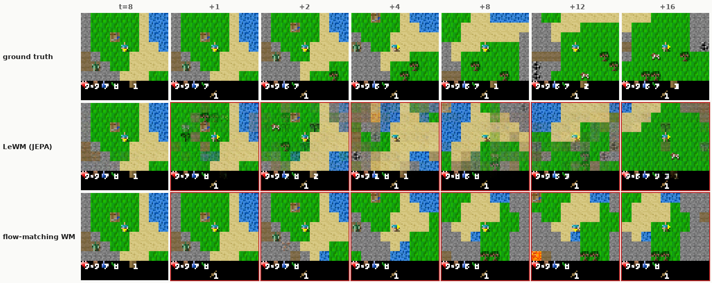
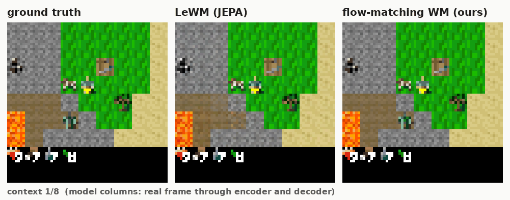
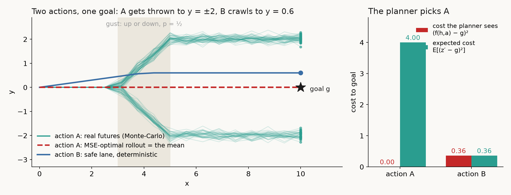
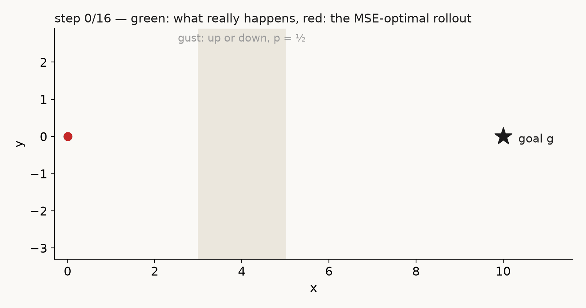
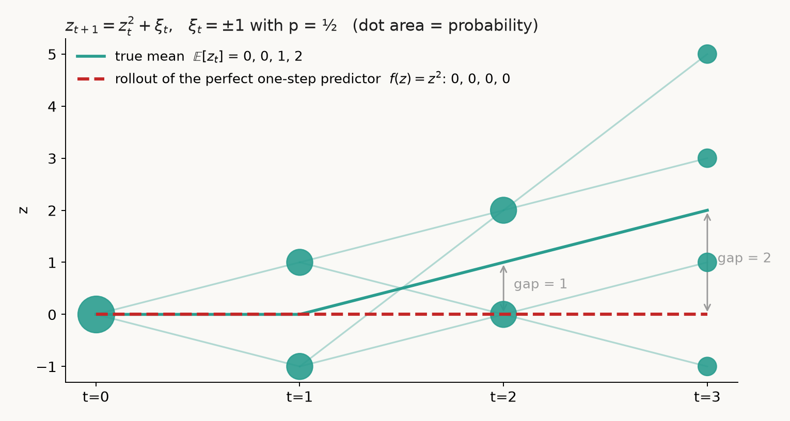
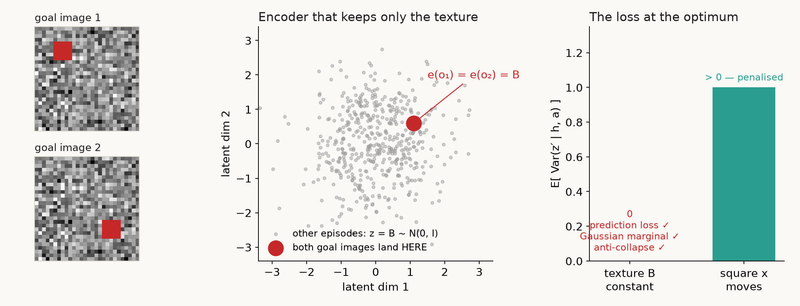
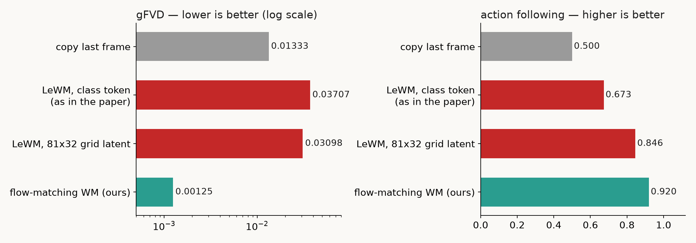
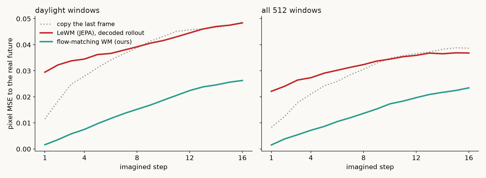
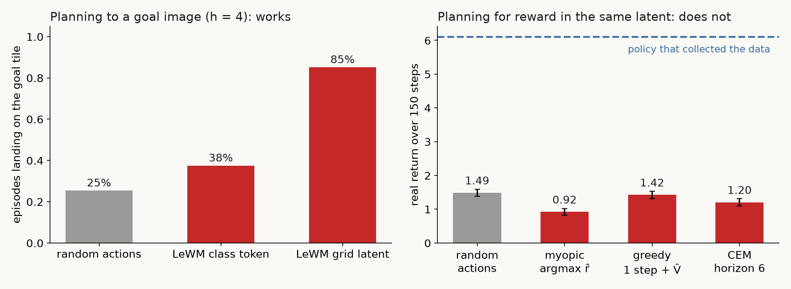
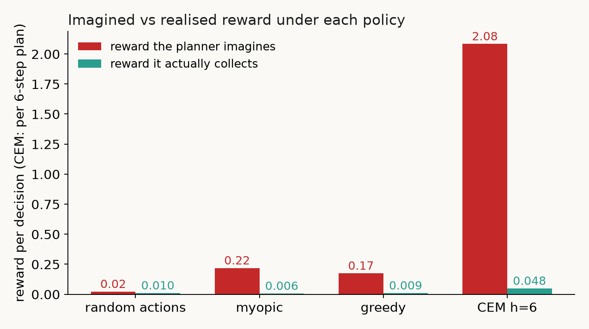

Два примера на салфетке, в которых схема LeWM выбирает не то действие при идеальном обучении. И Craftax, где она ошибается точно так же, рядом с диффузионной моделью мира, обученной на тех же данных за те же десять минут.

Хайп вокруг JEPA как модели мира выходит из-под контроля, так что этот пост давно пора было написать. Сразу оговорка. Я не говорю, что JEPA бесполезна как SSL-энкодер: в зависимости от домена там получаются хорошие результаты. Речь о другом. Как стохастическая модель мира, то есть как модель, в которой мы собираемся планировать, схема LeWM (Maes, Le Lidec и соавторы, 2026) это шляпа. Она ломается на элементарных примерах даже при идеальном обучении. Не «плохо обобщается» и не «не хватило данных». Ломается по построению. Сначала два примера на салфетке, потом Craftax.
В LeWM энкодер \(e\) переводит кадр в латент, а предиктор \(f\) предсказывает следующий латент по истории \(h\) и действию \(a\). Обучается он квадратичной ошибкой \(\|f(h,a)-z'\|^2\), где \(z'=e(o')\). Зафиксируем энкодер и спросим, что выучит предиктор. Для простоты возьмём одну координату латента. Пусть предиктор выдал число \(c\), а условное среднее равно \(m=\mathbb E[z'\mid h,a]\). Тогда ошибка распадается на два слагаемых:
$$L(c)=\mathbb E[(z'-c)^2\mid h,a]=\underbrace{\operatorname{Var}(z'\mid h,a)}_{\text{не зависит от }c}+(m-c)^2$$Перекрёстный член равен нулю, потому что \(\mathbb E[z'-m\mid h,a]=0\). Минимум достигается при \(c=m\):
$$f^{*}(h,a)=\mathbb E[z'\mid h,a],\qquad L(f^{*})=\operatorname{Var}(z'\mid h,a)$$Оптимальный предиктор возвращает условное среднее. Если следующее состояние с равной вероятностью треугольник или круг, мы предскажем их полупрозрачную смесь. Пока это просто свойство квадратичной ошибки. Проблемой оно становится в двух местах: когда по среднему считают стоимость действия и когда среднее подают обратно в модель.
Планировщик LeWM оценивает действие по расстоянию между предсказанным латентом и латентом цели \(g\). Настоящая ожидаемая стоимость раскладывается так же, как ошибка выше:
$$\mathbb E\big[(z'-g)^2\mid h,a\big]=\underbrace{(f^{*}(h,a)-g)^2}_{\text{что видит планировщик}}+\underbrace{\operatorname{Var}(z'\mid h,a)}_{\text{что он выбросил}}$$Для многомерного латента вместо дисперсии стоит след ковариации, то есть сумма дисперсий по координатам. Оценка по среднему занижает ожидаемую стоимость на весь разброс исходов. А разброс зависит от действия.

| действие | стоимость по среднему, \((f-g)^2\) | ожидаемая стоимость, \(\mathbb E[(z'-g)^2]\) |
|---|---|---|
| A, исход \(\pm2\) | 0 | 4 |
| B, исход \(0.6\) | 0.36 | 0.36 |
Планировщик минимизирует левый столбец и выбирает A. Минимизировать нужно правый. Среднее предсказано без ошибки. Оно точно совпало с целью, в которую действие A не приводит никогда. Вся разница в порядке операций. Сначала усреднить, потом возвести в квадрат: \(\big(\tfrac12\cdot2+\tfrac12\cdot(-2)\big)^2=0\). Сначала возвести в квадрат, потом усреднить: \(\tfrac12\cdot2^2+\tfrac12\cdot(-2)^2=4\). Перепланирование в MPC это не лечит. На каждом шаге планировщик снова выберет A.

С многошаговым прогнозом ещё веселее. Возьмём полностью наблюдаемую среду:
$$z_{t+1}=z_t^2+\xi_t,\qquad z_0=0$$Шум \(\xi_t\) на каждом шаге независимо равен \(+1\) или \(-1\) с вероятностью \(\tfrac12\). Идеальный одношаговый предиктор известен точно: \(f(z)=\mathbb E[z^2+\xi\mid z]=z^2\). В реальности после первого шага \(z_1=\pm1\). Квадрат любого из этих исходов равен единице, поэтому \(z_2=1+\xi_1\in\{0,2\}\) и \(\mathbb E[z_2]=1\). Модель же продолжает прогноз от своего предыдущего ответа. Она получает \(\hat z_1=f(0)=0\) и затем \(\hat z_2=f(0)=0\).

Оба пункта, 02 и 03, верны для любого детерминированного предиктора с квадратичной ошибкой. JEPA тут ни при чём. Именно поэтому генеративные модели мира, диффузионные и flow-matching, устроены иначе. Они не усредняют исход, а сэмплируют его. Треугольник или круг, а не их смесь.
Представим движущийся квадрат на случайной текстуре фона. Текстура новая в каждом эпизоде и постоянная внутри него. Её параметры \(B\sim\mathcal N(0,I_d)\) не зависят от квадрата, и размерности \(B\) хватает, чтобы заполнить весь латент. Энкодер может сохранить только \(B\). Тогда предиктор просто копирует вход. Ошибка предсказания равна нулю, распределение латентов гауссовское, защита от коллапса выполнена. Положение квадрата выброшено. Две цели, которые отличаются только положением квадрата, в латенте неразличимы.

И это не просто допустимый минимум. В LeWM градиент идёт и в целевой латент \(z'=e(o')\). Если для каждого энкодера взять оптимальный предиктор, функция потерь принимает вид
$$\min_f L(e,f)=\mathbb E_{h,a}\Big[\operatorname{tr}\operatorname{Cov}\big(e(o')\mid h^e,a\big)\Big]+\lambda R(e)$$Здесь \(R(e)\) обозначает регуляризатор SIGReg, а \(h^e\) историю, закодированную тем же энкодером. При одинаковом значении регуляризатора выигрывает энкодер с меньшей условной дисперсией. То есть тот, который выбирает самые предсказуемые признаки. Полезность признака для управления в этой формуле не участвует. В любой интересной среде самое интересное происходит редко и случайно. Функция потерь штрафует его как шум. В Craftax предсказуемее всего почти неподвижная карта. Мобы, спавны и исходы боя как раз и есть та дисперсия, которую просят выкинуть.
Бенчмарки LeWM, Push-T, Two-Room, Cube и Reacher, почти полностью детерминированы. Так устроены все работы про JEPA как модель мира, и их результаты этому рассуждению не противоречат.
Чтобы спор не остался на салфетке, я перенёс LeWM на JAX и обучил её в том же бюджете, что и нашу генеративную модель. Это 500 тысяч переходов Craftax-Classic и не больше 600 секунд на одной A100 вместе с загрузкой данных и компиляцией. Оценка одна и та же: замороженный бенчмарк, 2048 окон, 8 кадров контекста и 16 шагов прогноза. Функция потерь LeWM сохранена: MSE следующего латента плюс 0.09·SIGReg. Без stop-gradient, без EMA-учителя, без пиксельной ошибки. SIGReg численно сверен с референсной реализацией. После обучения я заморозил модель и отдельно обучил пиксельный декодер. Он нужен только для того, чтобы посмотреть на прогноз глазами и прогнать его через тот же бенчмарк. В десятиминутный бюджет он не входит и латенты не меняет.
Напротив стоит наша модель в духе Dreamer 4: токенизатор и flow-matching трансформер в пространстве латентов, 8 шагов Эйлера на кадр. Данные и бюджет те же.


Ниже те же 24 кадра, что и в шапке, и ещё одна сцена. Сцены выбраны автоматически: из 20% самых светлых окон бенчмарка взяты те, где будущее меняется сильнее всего. Прогнозы моделей в отборе не участвовали. Кадры контекста в колонках моделей показаны так, как модель их держит: реальный кадр прошёл через энкодер и декодер, без копирования пикселей. На них нет красной рамки. Так видно, что теряет само представление ещё до первого шага прогноза, и что добавляет прогноз.

Важно, чего здесь нет. JEPA не коллапсирует: разброс предсказанных латентов по батчу держится на уровне 0.94–1.02 от реального все 16 шагов. Она не уходит в шум и не размывается с каждым шагом: доля высокочастотной энергии в декодированных кадрах равна 0.87–0.90 от реальной и с горизонтом почти не падает. Накапливается не каша, а неправильное содержание: усреднённые тайлы в усреднённых местах. Это то, что предсказывают пункты 02 и 03. И это то, чего у flow-matching модели не происходит. Она сэмплирует одну конкретную карту, и эта карта остаётся собой.
Планирование к целевой картинке с пространственным латентом работает. Критерий тот же, что в LeWM: расстояние до латента цели. Последовательность дискретных действий подбирает CEM, план исполняется в реальном Craftax. На горизонте 4 в целевой тайл попадают 85% эпизодов против 25% у случайных действий. Но и здесь виден пункт 02. План CEM в среднем получает стоимость 0.138, а реальная последовательность действий, которая в эту цель привела, получает 0.247. Пятая часть случайных последовательностей выглядит для модели лучше правды.
Награды в JEPA нет вообще. Нет предсказания награды, конца эпизода и ценности состояния. Чтобы планировать на награду, я добавил три головы на замороженные латенты. Они обучены отдельно, вне бюджета, на наградах и возвратах из датасета. На отложенных по времени данных корреляция предсказанной награды с реальной равна 0.57, корреляция value с возвратом равна 0.65. Дальше MPC в реальной игре: 128 сред по 150 шагов. Все политики стартуют из одних состояний и получают один и тот же шум среды.


Единственный устойчивый эффект это выживаемость: 54% и 49% против 40% у случайной политики. Плотную часть награды, здоровье, латент видит, и планировщик на неё реагирует. Разреженную часть, достижения, он не видит. В сумме он проигрывает случайному тыканью, которое достижения собирает по дороге.
Так что моё мнение простое. Пока никто не показал рецепт, как обучить JEPA как модель мира для условного Minecraft или Craftax и потом в ней спланироваться, удачи применять её в реальных задачах со случайным миром. Возможность построить стохастическое расширение JEPA не исправляет математику той схемы, которую используют сейчас.